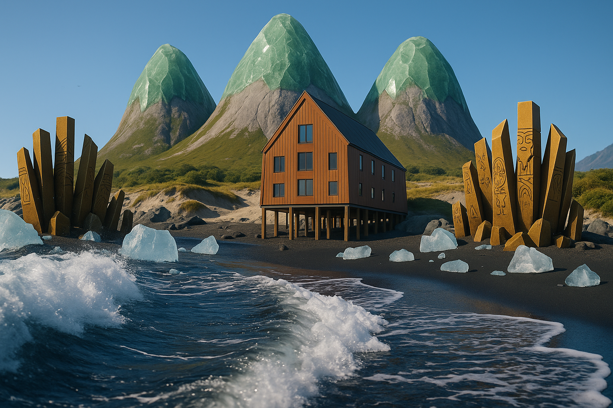
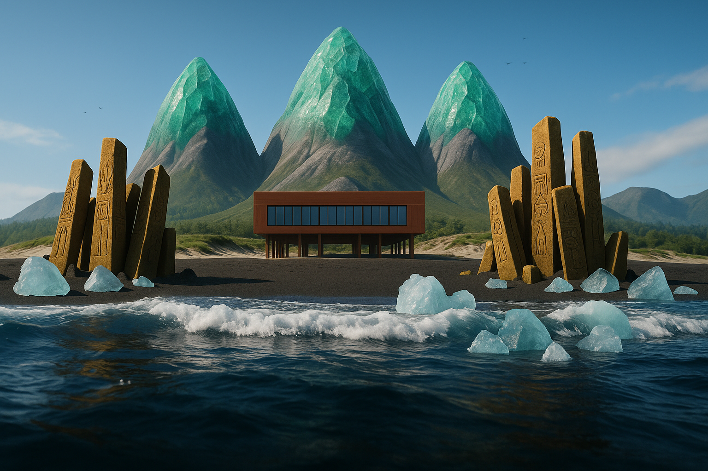
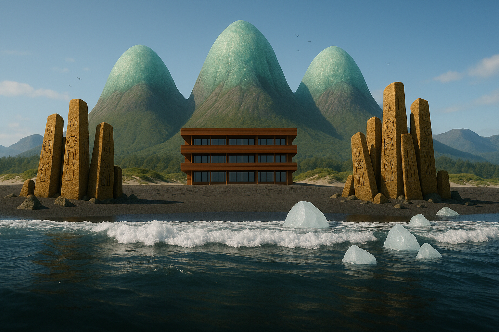
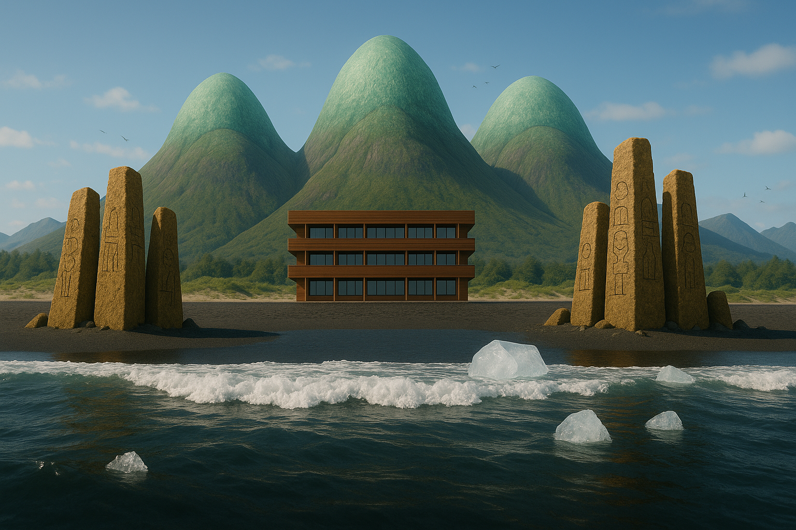
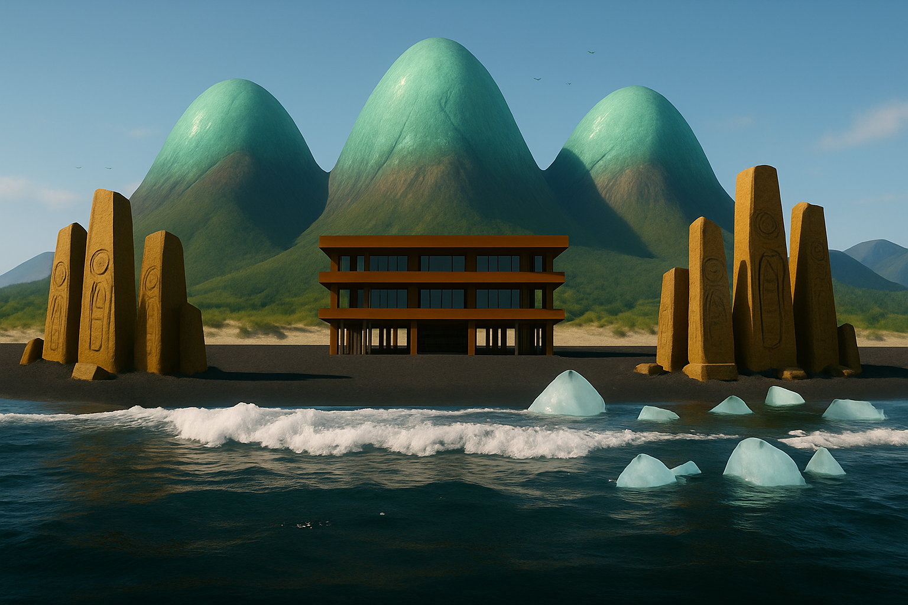
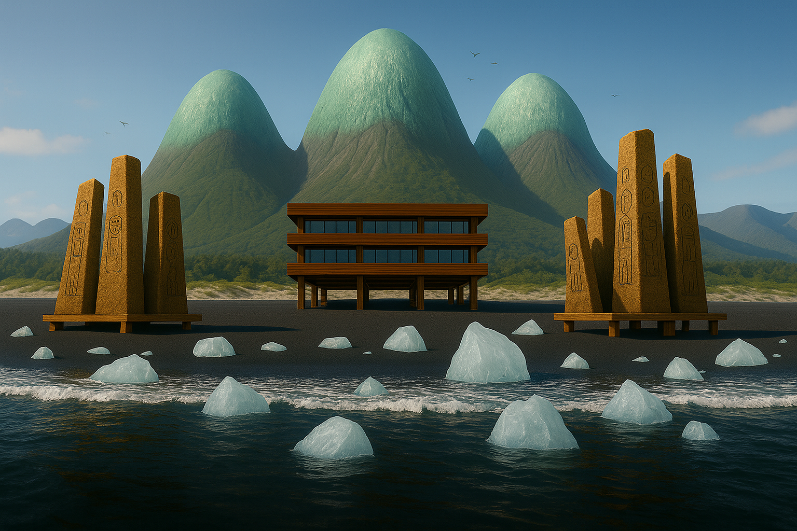
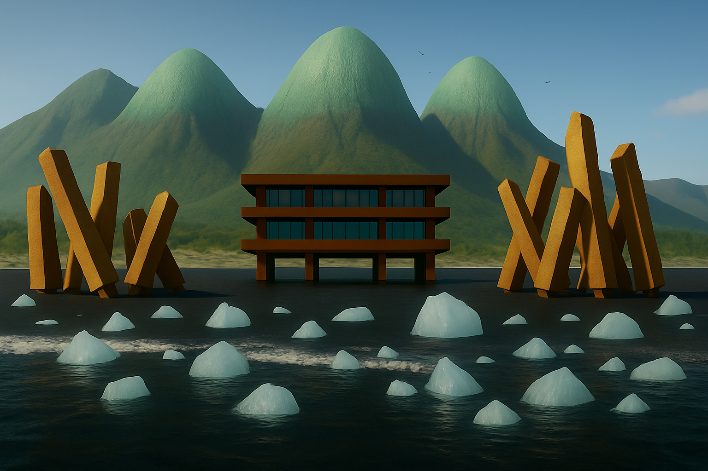
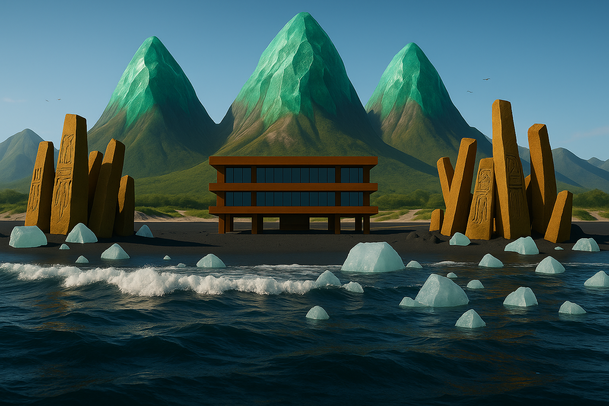

I dreamt of an awe inspiring place. I was traveling in a safari style vehicle, riding along the coast. I was fascinated by the black sand beach and the ancient sculptures. Once I caught my breath, I was told to turn around and that is when I saw the majestic 3 peaks.
Upon waking up, I remembered this place in utmost detail and decided to recreate it. I described the scene to AI and generated the image on the top of the page. Once I started telling AI what to fix in this image, I realized that AI fails to contain the details which were correct in the first image. It simply can not not change something. So I worked on the prompt text to include as much detail as possible about the scene. The rest of the images here are a byproduct of this quest.
In the meantime, I am creating the scene in Blender, a 3D model creation software. I am aiming to create a short video, implement the camera as me expriencing the scene.



